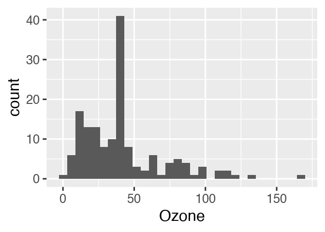
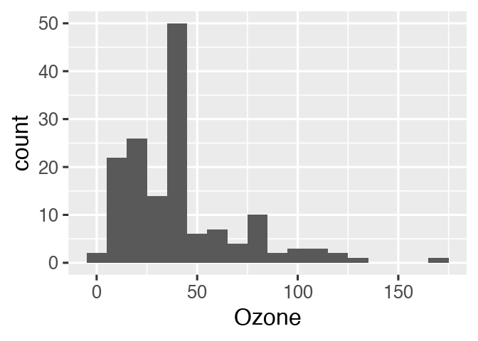

| Usage | Release | Development |
|---|---|---|
|
|
|
|
|
|
|
|
|
|

|

|
|
|

|
|
|
|
|

As of 2021-01-21, drake is superseded. The targets R package is the long-term successor of drake, and it is more robust and easier to use. Please visit https://books.ropensci.org/targets/drake.html for full context and advice on transitioning.
The drake R package 
Data analysis can be slow. A round of scientific computation can take several minutes, hours, or even days to complete. After it finishes, if you update your code or data, your hard-earned results may no longer be valid. How much of that valuable output can you keep, and how much do you need to update? How much runtime must you endure all over again?
For projects in R, the drake package can help. It analyzes your workflow, skips steps with up-to-date results, and orchestrates the rest with optional distributed computing. At the end, drake provides evidence that your results match the underlying code and data, which increases your ability to trust your research.


What gets done stays done.
Too many data science projects follow a Sisyphean loop:
- Launch the code.
- Wait while it runs.
- Discover an issue.
- Rerun from scratch.
For projects with long runtimes, this process gets tedious. But with drake, you can automatically
- Launch the parts that changed since last time.
- Skip the rest.
How it works
To set up a project, load your packages,
library(drake)
library(dplyr)
library(ggplot2)
library(tidyr)
#>
#> Attaching package: 'tidyr'
#> The following objects are masked from 'package:drake':
#>
#> expand, gatherload your custom functions,
create_plot <- function(data) {
ggplot(data) +
geom_histogram(aes(x = Ozone)) +
theme_gray(24)
}check any supporting files (optional),
# Get the files with drake_example("main").
file.exists("raw_data.xlsx")
#> [1] TRUE
file.exists("report.Rmd")
#> [1] TRUEand plan what you are going to do.
plan <- drake_plan(
raw_data = readxl::read_excel(file_in("raw_data.xlsx")),
data = raw_data %>%
mutate(Ozone = replace_na(Ozone, mean(Ozone, na.rm = TRUE))),
hist = create_plot(data),
fit = lm(Ozone ~ Wind + Temp, data),
report = rmarkdown::render(
knitr_in("report.Rmd"),
output_file = file_out("report.html"),
quiet = TRUE
)
)
plan
#> # A tibble: 5 x 2
#> target command
#> <chr> <expr_lst>
#> 1 raw_data readxl::read_excel(file_in("raw_data.xlsx")) …
#> 2 data raw_data %>% mutate(Ozone = replace_na(Ozone, mean(Ozone, na.rm = TR…
#> 3 hist create_plot(data) …
#> 4 fit lm(Ozone ~ Wind + Temp, data) …
#> 5 report rmarkdown::render(knitr_in("report.Rmd"), output_file = file_out("re…So far, we have just been setting the stage. Use make() or r_make() to do the real work. Targets are built in the correct order regardless of the row order of plan.
make(plan) # See also r_make().
#> ▶ target raw_data
#> ▶ target data
#> ▶ target fit
#> ▶ target hist
#> ▶ target reportExcept for files like report.html, your output is stored in a hidden .drake/ folder. Reading it back is easy.
readd(data) # See also loadd().
#> # A tibble: 153 x 6
#> Ozone Solar.R Wind Temp Month Day
#> <dbl> <dbl> <dbl> <dbl> <dbl> <dbl>
#> 1 41 190 7.4 67 5 1
#> 2 36 118 8 72 5 2
#> 3 12 149 12.6 74 5 3
#> 4 18 313 11.5 62 5 4
#> 5 42.1 NA 14.3 56 5 5
#> 6 28 NA 14.9 66 5 6
#> 7 23 299 8.6 65 5 7
#> 8 19 99 13.8 59 5 8
#> 9 8 19 20.1 61 5 9
#> 10 42.1 194 8.6 69 5 10
#> # … with 143 more rowsYou may look back on your work and see room for improvement, but it’s all good! The whole point of drake is to help you go back and change things quickly and painlessly. For example, we forgot to give our histogram a bin width.
readd(hist)
#> `stat_bin()` using `bins = 30`. Pick better value with `binwidth`.
So let’s fix the plotting function.
create_plot <- function(data) {
ggplot(data) +
geom_histogram(aes(x = Ozone), binwidth = 10) +
theme_gray(24)
}drake knows which results are affected.
vis_drake_graph(plan) # See also r_vis_drake_graph().
The next make() just builds hist and report.html. No point in wasting time on the data or model.
make(plan) # See also r_make().
#> ▶ target hist
#> ▶ target report
loadd(hist)
hist
Reproducibility with confidence
The R community emphasizes reproducibility. Traditional themes include scientific replicability, literate programming with knitr, and version control with git. But internal consistency is important too. Reproducibility carries the promise that your output matches the code and data you say you used. With the exception of non-default triggers and hasty mode, drake strives to keep this promise.
Evidence
Suppose you are reviewing someone else’s data analysis project for reproducibility. You scrutinize it carefully, checking that the datasets are available and the documentation is thorough. But could you re-create the results without the help of the original author? With drake, it is quick and easy to find out.
make(plan) # See also r_make().
#> ℹ unloading 1 targets from environment
#> ✓ All targets are already up to date.
outdated(plan) # See also r_outdated().
#> character(0)With everything already up to date, you have tangible evidence of reproducibility. Even though you did not re-create the results, you know the results are recreatable. They faithfully show what the code is producing. Given the right package environment and system configuration, you have everything you need to reproduce all the output by yourself.
Ease
When it comes time to actually rerun the entire project, you have much more confidence. Starting over from scratch is trivially easy.
Big data efficiency
Select specialized data formats to increase speed and reduce memory consumption. In version 7.5.2.9000 and above, the available formats are “fst” for data frames (example below) and “keras” for Keras models (example here).
library(drake)
n <- 1e8 # Each target is 1.6 GB in memory.
plan <- drake_plan(
data_fst = target(
data.frame(x = runif(n), y = runif(n)),
format = "fst"
),
data_old = data.frame(x = runif(n), y = runif(n))
)
make(plan)
#> target data_fst
#> target data_old
build_times(type = "build")
#> # A tibble: 2 x 4
#> target elapsed user system
#> <chr> <Duration> <Duration> <Duration>
#> 1 data_fst 13.93s 37.562s 7.954s
#> 2 data_old 184s (~3.07 minutes) 177s (~2.95 minutes) 4.157sHistory and provenance
As of version 7.5.2, drake tracks the history and provenance of your targets: what you built, when you built it, how you built it, the arguments you used in your function calls, and how to get the data back. (Disable with make(history = FALSE))
history <- drake_history(analyze = TRUE)
history
#> # A tibble: 12 x 11
#> target current built exists hash command seed runtime na.rm quiet
#> <chr> <lgl> <chr> <lgl> <chr> <chr> <int> <dbl> <lgl> <lgl>
#> 1 data TRUE 2020… TRUE 11e2… "raw_d… 1.29e9 0.011 TRUE NA
#> 2 data TRUE 2020… TRUE 11e2… "raw_d… 1.29e9 0.00400 TRUE NA
#> 3 fit TRUE 2020… TRUE 3c87… "lm(Oz… 1.11e9 0.006 NA NA
#> 4 fit TRUE 2020… TRUE 3c87… "lm(Oz… 1.11e9 0.002 NA NA
#> 5 hist FALSE 2020… TRUE 88ae… "creat… 2.10e8 0.011 NA NA
#> 6 hist TRUE 2020… TRUE 0304… "creat… 2.10e8 0.003 NA NA
#> 7 hist TRUE 2020… TRUE 0304… "creat… 2.10e8 0.009 NA NA
#> 8 raw_d… TRUE 2020… TRUE 855d… "readx… 1.20e9 0.02 NA NA
#> 9 raw_d… TRUE 2020… TRUE 855d… "readx… 1.20e9 0.0330 NA NA
#> 10 report TRUE 2020… TRUE 5504… "rmark… 1.30e9 1.31 NA TRUE
#> 11 report TRUE 2020… TRUE 5504… "rmark… 1.30e9 0.413 NA TRUE
#> 12 report TRUE 2020… TRUE 5504… "rmark… 1.30e9 0.475 NA TRUE
#> # … with 1 more variable: output_file <chr>Remarks:
- The
quietcolumn appears above because one of thedrake_plan()commands hasknit(quiet = TRUE). - The
hashcolumn identifies all the previous versions of your targets. As long asexistsisTRUE, you can recover old data. - Advanced: if you use
make(cache_log_file = TRUE)and put the cache log file under version control, you can match the hashes fromdrake_history()with thegitcommit history of your code.
Let’s use the history to recover the oldest histogram.
hash <- history %>%
filter(target == "hist") %>%
pull(hash) %>%
head(n = 1)
cache <- drake_cache()
cache$get_value(hash)
#> `stat_bin()` using `bins = 30`. Pick better value with `binwidth`.
Independent replication
With even more evidence and confidence, you can invest the time to independently replicate the original code base if necessary. Up until this point, you relied on basic drake functions such as make(), so you may not have needed to peek at any substantive author-defined code in advance. In that case, you can stay usefully ignorant as you reimplement the original author’s methodology. In other words, drake could potentially improve the integrity of independent replication.
Readability and transparency
Ideally, independent observers should be able to read your code and understand it. drake helps in several ways.
- The drake plan explicitly outlines the steps of the analysis, and
vis_drake_graph()visualizes how those steps depend on each other. -
draketakes care of the parallel scheduling and high-performance computing (HPC) for you. That means the HPC code is no longer tangled up with the code that actually expresses your ideas. - You can generate large collections of targets without necessarily changing your code base of imported functions, another nice separation between the concepts and the execution of your workflow
Scale up and out.
Not every project can complete in a single R session on your laptop. Some projects need more speed or computing power. Some require a few local processor cores, and some need large high-performance computing systems. But parallel computing is hard. Your tables and figures depend on your analysis results, and your analyses depend on your datasets, so some tasks must finish before others even begin. drake knows what to do. Parallelism is implicit and automatic. See the high-performance computing guide for all the details.
# Use the spare cores on your local machine.
make(plan, jobs = 4)
# Or scale up to a supercomputer.
drake_hpc_template_file("slurm_clustermq.tmpl") # https://slurm.schedmd.com/
options(
clustermq.scheduler = "clustermq",
clustermq.template = "slurm_clustermq.tmpl"
)
make(plan, parallelism = "clustermq", jobs = 4)With Docker
drake and Docker are compatible and complementary. Here are some examples that run drake inside a Docker image.
-
drake-gitlab-docker-example: A small pedagogical example workflow that leveragesdrake, Docker, GitLab, and continuous integration in a reproducible analysis pipeline. Created by Noam Ross. -
pleurosoriopsis: The workflow that supports Ebihara et al. 2019. “Growth Dynamics of the Independent Gametophytes of Pleurorosiopsis makinoi (Polypodiaceae)” Bulletin of the National Science Museum Series B (Botany) 45:77-86.. Created by Joel Nitta.
Alternatively, it is possible to run drake outside Docker and use the future package to send targets to a Docker image. drake’s Docker-psock example demonstrates how. Download the code with drake_example("Docker-psock").
Installation
You can choose among different versions of drake. The CRAN release often lags behind the online manual but may have fewer bugs.
# Install the latest stable release from CRAN.
install.packages("drake")
# Alternatively, install the development version from GitHub.
install.packages("devtools")
library(devtools)
install_github("ropensci/drake")Function reference
The reference section lists all the available functions. Here are the most important ones.
-
drake_plan(): create a workflow data frame (likemy_plan). -
make(): build your project. -
drake_history(): show what you built, when you built it, and the function arguments you used. -
r_make(): launch a freshcallr::r()process to build your project. Called from an interactive R session,r_make()is more reproducible thanmake(). -
loadd(): load one or more built targets into your R session. -
readd(): read and return a built target. -
vis_drake_graph(): show an interactive visual network representation of your workflow. -
recoverable(): Which targets can we salvage usingmake(recover = TRUE)(experimental). -
outdated(): see which targets will be built in the nextmake(). -
deps_code(): check the dependencies of a command or function. -
drake_failed(): list the targets that failed to build in the lastmake(). -
diagnose(): return the full context of a build, including errors, warnings, and messages.
Documentation
Core concepts
The following resources explain what drake can do and how it works. The learndrake workshop devotes particular attention to drake’s mental model.
- The user manual
-
drakeplanner, an R/Shiny app to help learndrakeand create new projects. Run locally withdrakeplanner::drakeplanner()or access it at https://wlandau.shinyapps.io/drakeplanner. -
learndrake, an R package for teaching an extendeddrakeworkshop. It contains notebooks, slides, Shiny apps, the latter two of which are publicly deployed. See the README for instructions and links.
In practice
- Miles McBain’s excellent blog post explains the motivating factors and practical issues {drake} solves for most projects, how to set up a project as quickly and painlessly as possible, and how to overcome common obstacles.
- Miles’
dflowpackage generates the file structure for a boilerplatedrakeproject. It is a more thorough alternative todrake::use_drake(). -
drakeis heavily function-oriented by design, and Miles’fnmatepackage automatically generates boilerplate code and docstrings for functions you mention indrakeplans.
Reference
- The reference website.
- The official repository of example code. Download an example workflow from here with
drake_example(). - Presentations and workshops by Will Landau, Kirill Müller, Amanda Dobbyn, Karthik Ram, Sina Rüeger, Christine Stawitz, and others. See specific links at https://books.ropensci.org/drake/index.html#presentations
- The FAQ page, which links to appropriately-labeled issues on GitHub.
Use cases
The official rOpenSci use cases and associated discussion threads describe applications of drake in the real world. Many of these use cases are linked from the drake tag on the rOpenSci discussion forum.
Here are some additional applications of drake in real-world projects.
drake projects as R packages
Some folks like to structure their drake workflows as R packages. Examples are below. In your own analysis packages, be sure to call drake::expose_imports(yourPackage) so drake can watch you package’s functions for changes and rebuild downstream targets accordingly.
Help and troubleshooting
The following resources document many known issues and challenges.
- Frequently-asked questions.
- Debugging and testing drake projects
- Other known issues (please search both open and closed ones).
If you are still having trouble, please submit a new issue with a bug report or feature request, along with a minimal reproducible example where appropriate.
The GitHub issue tracker is mainly intended for bug reports and feature requests. While questions about usage etc. are also highly encouraged, you may alternatively wish to post to Stack Overflow and use the drake-r-package tag.
Contributing
Development is a community effort, and we encourage participation. Please read CONTRIBUTING.md for details.
Similar work
drake enhances reproducibility and high-performance computing, but not in all respects. Literate programming, local library managers, containerization, and strict session managers offer more robust solutions in their respective domains. And for the problems drake does solve, it stands on the shoulders of the giants that came before.
Pipeline tools
GNU Make
The original idea of a time-saving reproducible build system extends back at least as far as GNU Make, which still aids the work of data scientists as well as the original user base of complied language programmers. In fact, the name “drake” stands for “Data Frames in R for Make”. Make is used widely in reproducible research. Below are some examples from Karl Broman’s website.
- Bostock, Mike (2013). “A map of flowlines from NHDPlus.” https://github.com/mbostock/us-rivers. Powered by the Makefile at https://github.com/mbostock/us-rivers/blob/master/Makefile.
- Broman, Karl W (2012). “Halotype Probabilities in Advanced Intercross Populations.” G3 2(2), 199-202.Powered by the
Makefileat https://github.com/kbroman/ailProbPaper/blob/master/Makefile. - Broman, Karl W (2012). “Genotype Probabilities at Intermediate Generations in the Construction of Recombinant Inbred Lines.” *Genetics 190(2), 403-412. Powered by the Makefile at https://github.com/kbroman/preCCProbPaper/blob/master/Makefile.
- Broman, Karl W and Kim, Sungjin and Sen, Saunak and Ane, Cecile and Payseur, Bret A (2012). “Mapping Quantitative Trait Loci onto a Phylogenetic Tree.” Genetics 192(2), 267-279. Powered by the
Makefileat https://github.com/kbroman/phyloQTLpaper/blob/master/Makefile.
Whereas GNU Make is language-agnostic, drake is fundamentally designed for R.
- Instead of a Makefile,
drakesupports an R-friendly domain-specific language for declaring targets. - Targets in GNU Make are files, whereas targets in
drakeare arbitrary variables in memory. (drakedoes have opt-in support for files viafile_out(),file_in(), andknitr_in().)drakecaches these objects in its own storage system so R users rarely have to think about output files.
Remake
remake itself is no longer maintained, but its founding design goals and principles live on through drake. In fact, drake is a direct re-imagining of remake with enhanced scalability, reproducibility, high-performance computing, visualization, and documentation.
Factual’s Drake
Factual’s Drake is similar in concept, but the development effort is completely unrelated to the drake R package.
Other pipeline tools
There are countless other successful pipeline toolkits. The drake package distinguishes itself with its R-focused approach, Tidyverse-friendly interface, and a thorough selection of parallel computing technologies and scheduling algorithms.
Memoization
Memoization is the strategic caching of the return values of functions. It is a lightweight approach to the core problem that drake and other pipeline tools are trying to solve. Every time a memoized function is called with a new set of arguments, the return value is saved for future use. Later, whenever the same function is called with the same arguments, the previous return value is salvaged, and the function call is skipped to save time. The memoise package is the primary implementation of memoization in R.
Memoization saves time for small projects, but it arguably does not go far enough for large reproducible pipelines. In reality, the return value of a function depends not only on the function body and the arguments, but also on any nested functions and global variables, the dependencies of those dependencies, and so on upstream. drake tracks this deeper context, while memoise does not.
Literate programming
Literate programming is the practice of narrating code in plain vernacular. The goal is to communicate the research process clearly, transparently, and reproducibly. Whereas commented code is still mostly code, literate knitr / R Markdown reports can become websites, presentation slides, lecture notes, serious scientific manuscripts, and even books.
knitr and R Markdown
drake and knitr are symbiotic. drake’s job is to manage large computation and orchestrate the demanding tasks of a complex data analysis pipeline. knitr’s job is to communicate those expensive results after drake computes them. knitr / R Markdown reports are small pieces of an overarching drake pipeline. They should focus on communication, and they should do as little computation as possible.
To insert a knitr report in a drake pipeline, use the knitr_in() function inside your drake plan, and use loadd() and readd() to refer to targets in the report itself. See an example here.
Version control
drake is not a version control tool. However, it is fully compatible with git, svn, and similar software. In fact, it is good practice to use git alongside drake for reproducible workflows.
However, data poses a challenge. The datasets created by make() can get large and numerous, and it is not recommended to put the .drake/ cache or the .drake_history/ logs under version control. Instead, it is recommended to use a data storage solution such as DropBox or OSF.
Containerization and R package environments
drake does not track R packages or system dependencies for changes. Instead, it defers to tools like Docker, Singularity, renv, and packrat, which create self-contained portable environments to reproducibly isolate and ship data analysis projects. drake is fully compatible with these tools.
workflowr
The workflowr package is a project manager that focuses on literate programming, sharing over the web, file organization, and version control. Its brand of reproducibility is all about transparency, communication, and discoverability. For an example of workflowr and drake working together, see this machine learning project by Patrick Schratz.
Citation
citation("drake")
#>
#> To cite drake in publications use:
#>
#> William Michael Landau, (2018). The drake R package: a pipeline
#> toolkit for reproducibility and high-performance computing. Journal
#> of Open Source Software, 3(21), 550,
#> https://doi.org/10.21105/joss.00550
#>
#> A BibTeX entry for LaTeX users is
#>
#> @Article{,
#> title = {The drake R package: a pipeline toolkit for reproducibility and high-performance computing},
#> author = {William Michael Landau},
#> journal = {Journal of Open Source Software},
#> year = {2018},
#> volume = {3},
#> number = {21},
#> url = {https://doi.org/10.21105/joss.00550},
#> }Acknowledgements
Special thanks to Jarad Niemi, my advisor from graduate school, for first introducing me to the idea of Makefiles for research. He originally set me down the path that led to drake.
Many thanks to Julia Lowndes, Ben Marwick, and Peter Slaughter for reviewing drake for rOpenSci, and to Maëlle Salmon for such active involvement as the editor. Thanks also to the following people for contributing early in development.
- Alex Axthelm
- Chan-Yub Park
- Daniel Falster
- Eric Nantz
- Henrik Bengtsson
- Ian Watson
- Jasper Clarkberg
- Kendon Bell
- Kirill Müller
- Michael Schubert
Credit for images is attributed here.